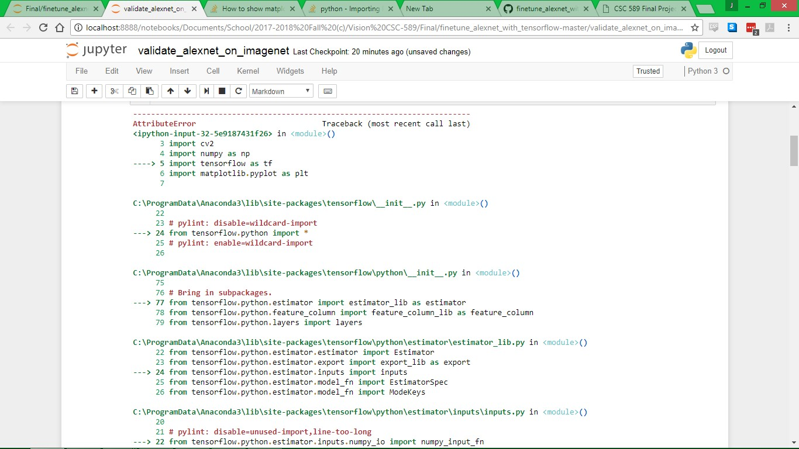

Hotdog predicted correctly
Set the train_layers = ['fc2', 'fc1']
Machine learning is an amazing, if sometimes opaque tool. The tool here was able to consistently very accurately identify different images. I tried doing training using a small set of food and dog picutures together
I had some early success, but without warning I lost access to the tensorflow library. I searched for a solution, but found none. I have included here the error report and the results I was able to achieve. I appologize for the late submission, but I really wanted to find a solution and that took a long time.
|  |
This project was engaging for the time I was able to put into it. I still am unsure why tensorflow isn't working. I tried reinstalling both it and Anaconda3. Neither fix worked. If I was able to, I would have increased the learning rate to the point that the system became over-fitted to the test images that I was using. Then I would have started training it using an entirely different set of images. I think that overfitting is one of the most interesting parts of machine learning, and I'd like to have the opportunity to understand how it works. In a context like this, with images, its easy to tell if overfitting is happening because all of the features of the data are obvious and visible. Training becomes more interesting when patterns in training data are obscured, like in the case of diagnosing illness. A large group of cancer patients might also be drinking contaminated water, so a machine learning system trained on them as a dataset is actually being trained to recognize cancer patiets who drink bad water, which is not the system's intent.